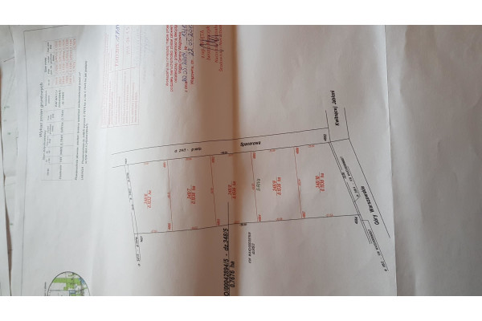

MEDIA, CISZA I DOBRY DOJAZD. (otwocki, Wiązowna, Duchnów)
245 000 PLN
Numer oferty
Typ transakcji
Cena
Powierzchnia
Cena za m2
Przeznaczenie
Typ działki
Długość
Szerokość
Typ drogi
Forma własności
Prąd
Woda
Gaz
Warunki zabudowy
52
Sprzedaż
245 000 PLN
1535 m2
160 PLN / m2
budownictwo jednorodzinne
budowlana
50
31
asfaltowa
własność
jest
w drodze
jest
w trakcie załatwiania
 |
 |
Szukacie Państwo działki z mediami i dobrym dojazdem, proszę bardzo mam coś odpowiedniego. Działka położona jest w Duchnowie, na rogu dwóch gminnych ulic, do głównej ul. Wspólnej można dojść chodnikiem wyłożonym kostką brukową, a na Wspólnej mamy przystanek linii 730, dzieci mogą być samodzielne i same dotrzeć do szkoły w Wiązownie czy Brzezinach. Dojazd do Góraszki i budującej się obwodnicy Warszawy również bardzo dobry. Media są tu wszystkie oprócz kanalizacji, ale i ta ma się tu pojawić w przyszłym roku. Czyli mamy wszystko aby wygodnie żyć a do tego jeszcze spokój i cisza. Działka powstała po podziale sadu. Możliwość dokupienia czterech podobnych działek i jeszcze niepodzielonego sadu ponad dwa hektary ziemi. Zapraszam do inwestowania można tu wybudować wygodny, nowoczesny dom lub kilka nieruchomości i do tego jeszcze za rozsądną cenę.